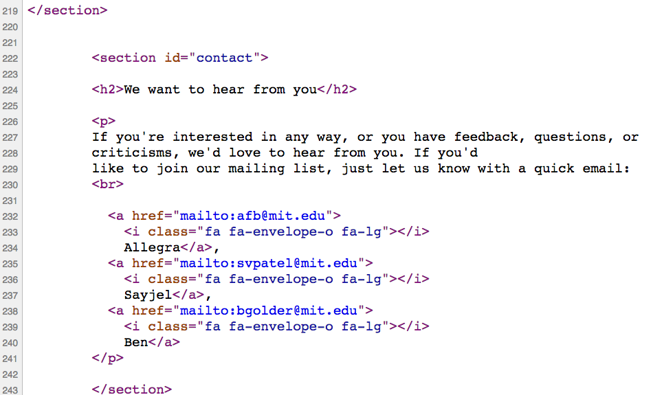

Brought to you by CodeKitchen
Today we will build on the last week's workshop Secret Coding Essentials. I'll assume that you are comfortable working with a text editor of your choice and know super basic command line commands.
In this workshop you will be introduced to the basics of 'cooking' a delicious website. You will 'dissect' an example web site and look at its important ingredients called
HTML & CSS
In a nutshell, it:
HTML, CSS, & JavaScript (later...)Let's dissect a web page. In other words, let's look at its source code.
IFF you are using Chrome on a Mac, type Option+Command+U to look at the web page's source code.
For other OS+browsers read here.